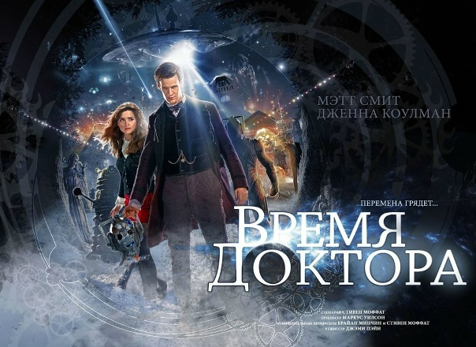

Эра Одиннадцатого Доктора
<<< НАЗАД ||| Время Доктора ||| ДАЛЬШЕ >>>
MVO: [TVShows], [Кириллица], [BaibaKo], [ВГТРК], [RedDiamond studio] или Original [ENG] Субтитры: Русские TrueTransLate или Английские | |
 | |
The Time of the Doctor
рождественский спецвыпуск
25 декабря 2013
Формат: 60-минутный эпизод
| Варианты озвучек: | * Разные: смотрите по инструкции чаще всего это 15-я или 16-я серия седьмого сезона |
|---|---|
| Скачивание и просмотр: |
На орбите тихой захолустной планеты собрались силы самых смертоносных рас Вселенной, которых привело туда загадочное сообщение, распространяющееся среди звёзд. И среди них — Доктор. Спасший Клару от семейного Рождественского ужина, Повелитель Времени и его лучший друг должны выяснить, что этот загадочный сигнал означает для его судьбы, а также для судьбы Вселенной.

